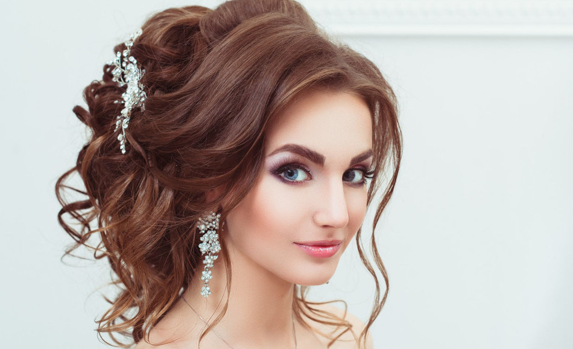
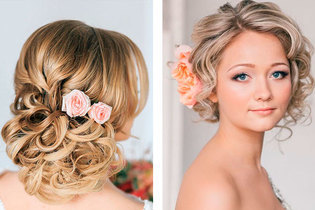
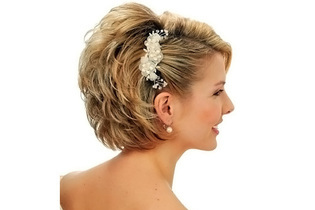
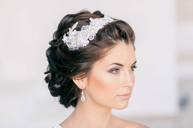

Создание вечерних и свадебных причёсок

Как же важно любой женщине всегда выглядеть потрясающе, а в особенных, ответственных для неё моментах это желание усиливается стократно. Стилисты нашей студии готовы помочь любой даме создать неповторимый стильный образ для пышных торжеств, Дней Рождений, выпускных, свадеб и других праздников и важных событий. Обратившись к мастерам студии красоты «Boston» за свадебной или вечерней причёской, Вы смело затмите своей красотой всех гостей на празднике, а памятные фотографии с торжества из года в год будут вызывать у вас гордость и восхищение.
Варианты причёсок на короткие волосы



- Для коротких волос вечерние причёски нужны не меньше, чем для длинных, и требуют они, порой, даже более кропотливой и искусной работы.
- Вечерние причёски на средние волосы стоят немного дороже, чем на короткие, но всегда восхищают разнообразием выбора и умелой работой стилистов салона.
- Наши специалисты также предлагают на выбор большое разнообразие вечерних причёсок на длинные волосы, способных подчеркнуть прелесть Вашего наряда и красивый макияж.